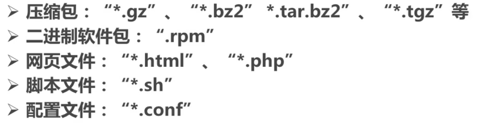
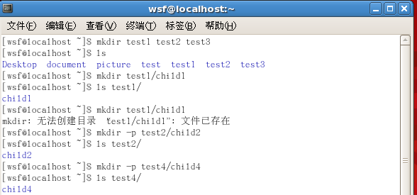
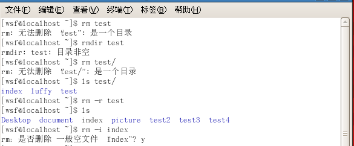
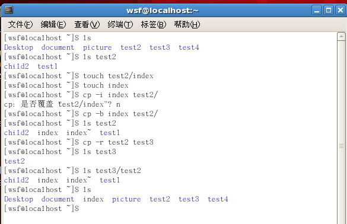
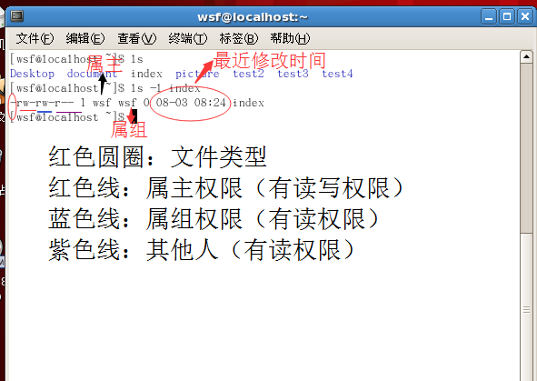
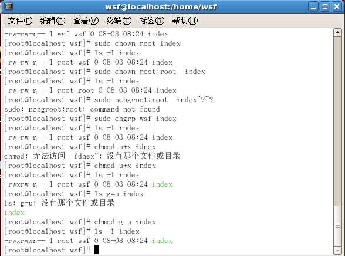
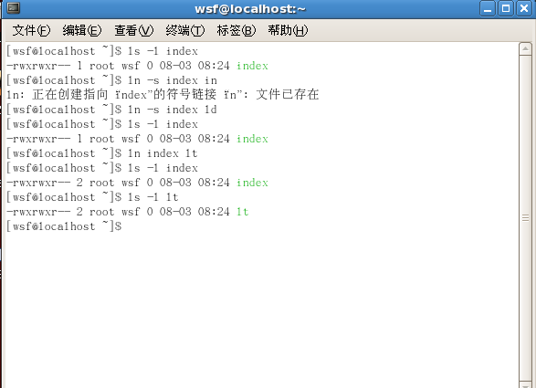
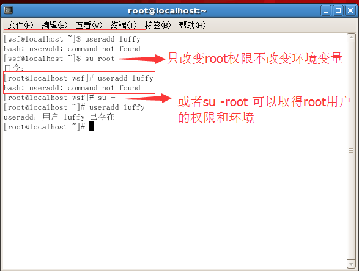
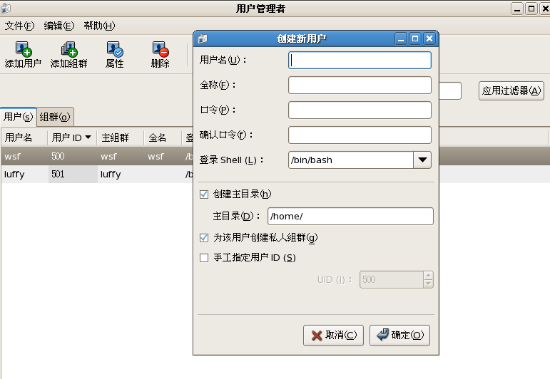

- Linux简介
- Shell命令
- 文件目录管理（一部分）
windows上的应用程序不能直接在linux上面安装
linux中所有内容以文件形式保存，包括硬件
Linux不靠文件扩展名来区分文件类型

问题一：Shell是什么？
C语言编写的程序 用户使用Linux的桥梁
问题二：Shell和命令行的区别是什么？
命令行只是接受用户的命令输入，然后将命令传递给命令解释器。而Shell是命令行解释器，用户在命令行输入命令，运行在后台的Shell将命令转换成指令代码发送给操作系统。
cd /* 返回自己的用户主列表 */
cd ~ /* 返回自己的用户主列表 */
cd .. /* 返回上一级目录 */
cd ../.. /* 返回根目录 */
...
ls -F /* 在目录后面加上/，在链接文件后加@，在可执行文件加* */
ls -a /* 显示所有文件，包括隐藏文件 */
ls -l /* 查看文件各种属性（vdir） */
ls 路径 /* 查看该子目录下面的文件列表 */
...
cat /* 查看文件内容 */
more /* 相较于cat将文件内容全部显示出来，more是一页一页的显示（按下空格键向下翻一页，按enter键向下滚动一行，按Q键退出） */
head与tail /* 阅读文件的开头与结尾 */
less /* 更好的文本阅读工具 */
pwd /* 显示当前所在的位置，即工作目录 */
grep /* 查找文件内容,格式：grep 被搜索的关键词 被搜索的文件 */
...
find /* 查找文件 */
locate /* 更快速的定位文件 */
whereis /* 查找特定程序 */
who /* 查看当前系统中有哪些人登录以及他们都工作在哪个控制台 */
whoami /* 查看当前自己是什么身份登录 */
uname /* 查看当前系统的版本信息（-a，查看当前操作系统所有有用的信息；-r，查看系统的内核版本信息） */
man /* 方便的获取某个命令的帮助信息 */
whatis /* 查看命令大概可以做些什么 */
apropos /* 通过使用手册反查到某个命令 */
...
输入目录的前几个字符，按Tab键，自动补全文件名；如果以已键入字符开头的文件目录不止一个，那么连续按下Tab键两次，就会以列表的形式列出以已键入字符开头的所有文件。（此方法同样适用于linux命令）
权限设置针对的用户
文件所有者（属主）——文件创建者自动成为文件所有者，但文件的所有权可以由“root”转让
文件属主用户——一群用户组成的集合
其他人——除了文件所有者和文件属主用户的其他用户和root用户在内的用户
权限分类
读取（r）——打开并查看文件内容
写入（w）——修改权限
执行（x）——（执行文件分为两类：直接由CPU执行的二进制代码；Shell脚本程序）
对于目录来说：
执行权限实际控制用户能否进入该目录；读取权限决定是否能够列出目录下面的内容；写入权限控制着在目录中创建、删除和重命名文件
mkdir:Make directory 建立目录
touch: 建立空文件mkdir 目录名 目录名 ...... / 可以一次建立一个或多个目录 / mkdir 绝对路径 / 使用绝对路径建立目录 eg：mkdir ~/photo/index / mkdir -p 绝对路径 / 完整的创建一个子目录结构 / ...
mv:Move File 移动文件
cp:Copy File 复制文件和目录
rmdir:Remove Directory 删除目录
rm:Remove File 删除文件
mv 目录名/文件名 目标目录名 /* 注意：会将目标目录下面的同名文件覆盖 */
mv -i 目录名/文件名 目标目录名 /* 提示是否覆盖（Y/N）*/
mv -b 目录名/文件名 目标目录名 /* 在目标目录的同名文件后加~，避免覆盖 */
mv hello hello2 /* 文件在同一个目录下面里移动，实现重命名 */
cp 待复制文件名 目标目录名 /* 注意：会将目标目录下面的同名文件覆盖 */
cp -i 待复制文件名 目标目录名 /* 提示是否覆盖（Y/N）*/
cp -b 待复制文件名 目标目录名 /* 在目标目录的同名文件后加~，避免覆盖 */
cp -r 待复制目录名 目标目录名 /* 将子目录连同其中的文件一起复制到目标目录下 */
rmdir 待删除目录名 /* 只能删除空目录 */
rm 待删除文件名 /* 直接将文件永久删除（只读文件会提示是否删除） */
rm -i 待删除文件名 /* 提示是否删除（Y/N） */
rm -f 待删除文件名 /* 避免交互性操作，自动回到Y */
rm -r 待删除目录名 /* 递归删除所有文件及其子目录 */
...
 
权限设置用户分类
文件所有者-属主（u）、文件属组用户（g）和其他人（o）（除属主和属组外的其他用户）
权限分类
读（r-4）、写（w-2）、执行（x-1）
ls:List File 列出文件
chown:Change owner 改变所有者
chgrp:Change group 改变用户组
chmod:Change mode 改变模式
ls -l 文件名 /* 查看文件属性包括权限 */
ls -d 目录名 /* 查看目录属性包括权限 */
chown [属主]:[属组] 文件名 /* 改变文件所有权 */
chown -R [属主]:[属组] 目录 /* 改变一个目录及其下面所有文件和子目录的所有权 */
chgrp 属组 文件名 /* 设置文件属组 */
chgrp -R 属组 目录 /* 设置目录及其子目录的属组 */
...
 
Linux文件类型
普通文件（-），目录（d），字符设备文件（c），块设备文件（b），本地域套接口（s），有名管道（p），符号链接（l）
文件链接
ln:Link files 链接文件
ln -s 目标文件 别名 / 符号链接（软链接） / ln 目标文件 别名 / 硬链接，直接引用 / ...
ls > 目标文件名 / 将ls的输出重定向到目标文件下，直接覆盖目标文件的原内容 /
ls >> 目标文件名 / 保留原文件内容 /
cat < 目标文件名 / 从目标文件中获取输入，遇到命令结束符之后停止读取 /
...
管道将“重定向”再向前推进了一步。通过一根竖线“|”，将一条命令的输出连接到另一条命令输入。
所有用户信息存储在/etc/passwd，用户的登录密码保存在/etc/shadow文件
useradd 用户名 /* 添加用户 */
useradd -g 用户组 用户名 /* 指定用户所属的组 */
passwd 用户名 /* 设置用户口令 */
userdel 用户名 /* 删除用户账号 */
userdel -r 用户名 /* 删除用户账号及其主目录 */
 
usermod -d 主目录 用户名 /* 修改账号主目录 */
usermod -e 有效时间 用户名 /* 修改账号的有效时间 */
usermod -g 用户组名 用户名 /* 修改用户所属组 */
usermod -l 新账号名称 用户名 /* 修改账号名称 */
id 用户名 /* 查看用户的UID（User Identification，用户身份证明）、GID（Group Identification，群体身份）以及所属组 */
id /* 查看当前登录用户的信息id */
su:Swith user 切换用户
sudo:Superuser do(可以接受命令行为参数，以root身份运行)
su 用户名 / 切换用户 /
history /* 看到当前用户曾经执行的命令（.bash_history存储使用过的命令） */
history n /* 列出当前用户最近几次输入的命令 */
将应用程序、配置文件和管理数据打包的产物。
dpkg:Debian package
dpkg --install/-i /* 安装软件包 */
dpkg --remove/-r /* 卸载软件包 */
...
rpm:RPM Package Manager
rpm -i -v -h 软件包名字 /* -v、-h可选，其中-v：显示rpm当前正在执行的工作，-h通过打印一系列的“#”提醒用户当前安装进度 */
rpm -U -v -h 软件包名字 /* 升级软件包 */
rpm -q 软件包名字 /* 查看已安装的软件包 */
rpm -qa /* 列出当前系统已经安装的所有软件包 */
rpm -e 软件包名字 /* 卸载软件包 */
...
全称为Advanced Package Tool，可以自动检测软件依赖问题，下载和安装所有文件；甚至只需要一条命令，就可以更新整个系统上的所有软件包。
apt-get update /* 更新当前apt-get缓存中的软件包信息 */
apt-get install 软件包名字 /* 下载并安装软件包 */
apt-get upgrade /* 下载并安装在本系统已有的软件包的最新版本 */
apt-get remove 软件包名字 /* 卸载特定的软件包 */
apt-get source 软件包名字 /* 下载特定的软件包源代码 */
apt-get clear /* 删除所有已下载的软件包 */
apt-get search 软件包名字 /* 搜索软件包列表中特定的软件包 */
apt-get depends 软件包名字 /* 列出特定软件包的依赖关系 */
文件系统是一种对物理空间的组织方式，通常在格式化硬盘时创建。
- ext3fs和ext4fs文件系统
ext4fs是对ext3fs的扩展和完善。ext4fs通过增加日志功能，提高了文件系统的可靠性。- ReiserFS文件系统
日志文件系统，免去了对系统奔溃、意外断电等特殊事件的担忧。在算法空间效率更优。
df:Disk free 空余硬盘
df / 显示当前磁盘使用情况 /
df -t 文件名 / 显示特定的文件系统 /
...
fsck:File System ChecK
fsck 分区编号/* 指定需要检查的文件系统 */
fsck -p /* 读取fstab文件确定检查哪些文件系统 */
...
gzip:(或者gunzip)支持的扩展名有.gz、.Z、-gz、.z、-z和Z
bzip2:比gzip压缩率更高
gzip/bzip2 文件 /* 压缩文件 */
gzip -l 文件 /* 查看压缩效果 */
gzip -tv 文件 /* 测试压缩文件的完整性 */
gunzip/bunzip2 文件 /* 解压文件 */
gunzip/bzip2 -d 文件 /* 解压文件 */
...
tar:文件打包
tar -cvwf 文件 目录/* 读取多个文件和目录，并打包成为一个文件（c：指导tar创建归档文件，v：显示命令执行过程，f：指定归档文件中的文件名，w:每次讲单个文件加入或抽出归档文件是征求用户意见，z：自动调用gzip程序） */
tar -xvf 文件 目录/* 解开.tar文件（x：解开文档） */
...
进程：进程是操作系统的一个抽象概念，用来表示正在运行的程序。
PID（进程的ID号）：标识进程身份的ID号
PPID（父进程的PID）：Linux中，所有的进程都必须由另一个进程创建（除了在系统引导时，由内核自主创建并安装的那几个进程。，创建它的那个进程就是父进程。
UID和EUID（真实和有效的用户ID）：进程的UID就是创建者的用户ID号（标识进程的属主），EUID用来确定进程对某些资源和文件的访问权限。
GID和EGID（真实和有效的组ID）：GID就是创建者所属组的ID，EGID类似于EUID
ps：Process Status 进程状态
ps aux /* 显示当前系统上运行的所有进程信息 */
ps lax /* 可以提供PPID和谦让度（NI），不会显示进程属主的用户名 */
top /* 即时跟踪当前系统中进程的情况 */
...
lsof：List Open Files
lsof 文件名 /* 列出指定文件的进程信息 */
lsof /* 列出当前系统中所有打开文件的进程信息 */
...
kill -l /* 显示所有的信号及其编号 */
kill 信号名称 PID（进程ID）/* 向某个进程发送某个信号 */
kill -TERM/-SIGTERM PID（进程ID）/* 请求终止某项操作 */
kill -KILL/SIGKILL PID（进程ID）/* 结束进程 */
...